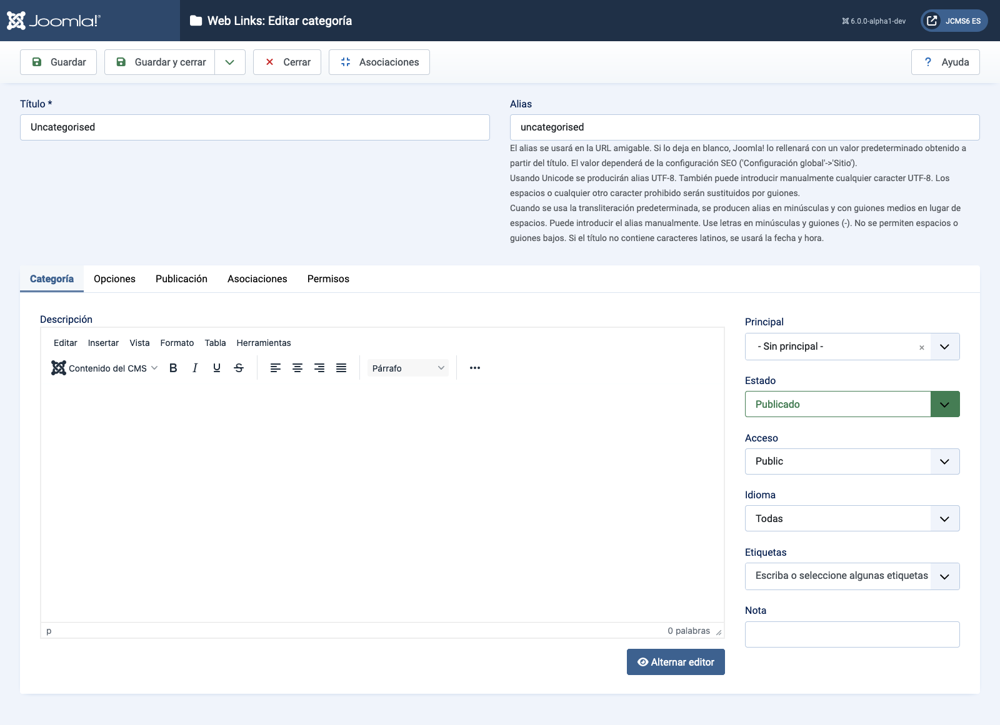

Joomla Help Screens
Liens Web : Modifier la catégorie
Descripción
La página Enlaces Web: Editar Categoría se utiliza para crear una nueva categoría o editar una existente. Tenga en cuenta que es necesario crear al menos una categoría de enlace web antes de poder crear un enlace web. Además, las categorías de enlaces web son independientes de otros tipos de categorías, como las de artículos, banners y fuentes de noticias.
Elementos Comunes
Algunos elementos de esta página están cubiertos en artículos de ayuda separados:
- Barras de Herramientas.
- La Pestaña de Opciones.
- La Pestaña de Publicación.
- La Pestaña de Asociaciones.
- La Pestaña de Permisos.
Cómo Acceder
- Seleccione Componente → Enlaces Web → Categorías desde el menú del Administrador. Luego...
- Seleccione el botón Nuevo en la Barra de Herramientas para añadir una nueva Categoría. O...
- Seleccione un Título de la columna Título de la lista para editar una Categoría existente.
Captura de pantalla

Campos del formulario
- Título El título para este elemento. Esto puede o no mostrarse en la página, dependiendo de los valores de parámetros que elijas.
- Alias El nombre interno del elemento. Normalmente, puedes dejar esto en blanco y Joomla llenará un valor predeterminado del título en minúsculas y con guiones en lugar de espacios.
Pestaña de Categoría
Panel izquierdo
- Descripción La descripción del elemento. Las descripciones de Categoría, Subcategoría y Enlace Web pueden mostrarse en las páginas web, dependiendo de la configuración de los parámetros.
Traducido por openai.com